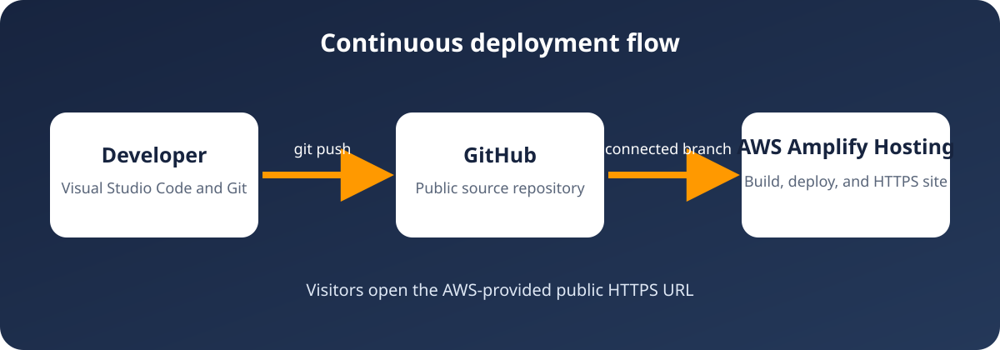

On-demand resources
Provision compute, storage, databases, and other resources when they are needed.
Explore cloud concepts, compare foundational AWS services, and test which service fits a practical scenario.
Cloud basics
Provision compute, storage, databases, and other resources when they are needed.
Use individual services for as long as they are needed and pay for the resources consumed.
A Region is a separate geographic area. Availability Zones are isolated locations inside a Region.
AWS secures the cloud infrastructure. Customers secure their data, access, and service configuration.
Service selection
Start with the problem, then choose the service category that solves it.
Provides on-demand, scalable computing capacity as virtual servers.
Use it when you need control over a virtual server.
Stores data as objects inside buckets with scalable storage and access controls.
Use it for files, backups, static assets, and data storage.
Provides a logically isolated virtual network for AWS resources.
Use it to define network boundaries, subnets, routes, and connectivity.
Makes it easier to set up, operate, and scale a relational database.
Use it when an application needs tables, relationships, and SQL.
Provides a serverless, fully managed, distributed NoSQL database.
Use it for key-value or document workloads that need consistent scaling.
Controls who is authenticated and authorized to access AWS resources.
Use it to manage identities, roles, and permissions.
Project architecture

GitHub stores the source and change history. AWS Amplify Hosting reads the connected branch, deploys the static files, and publishes an HTTPS URL.
Knowledge check
Choose one service.